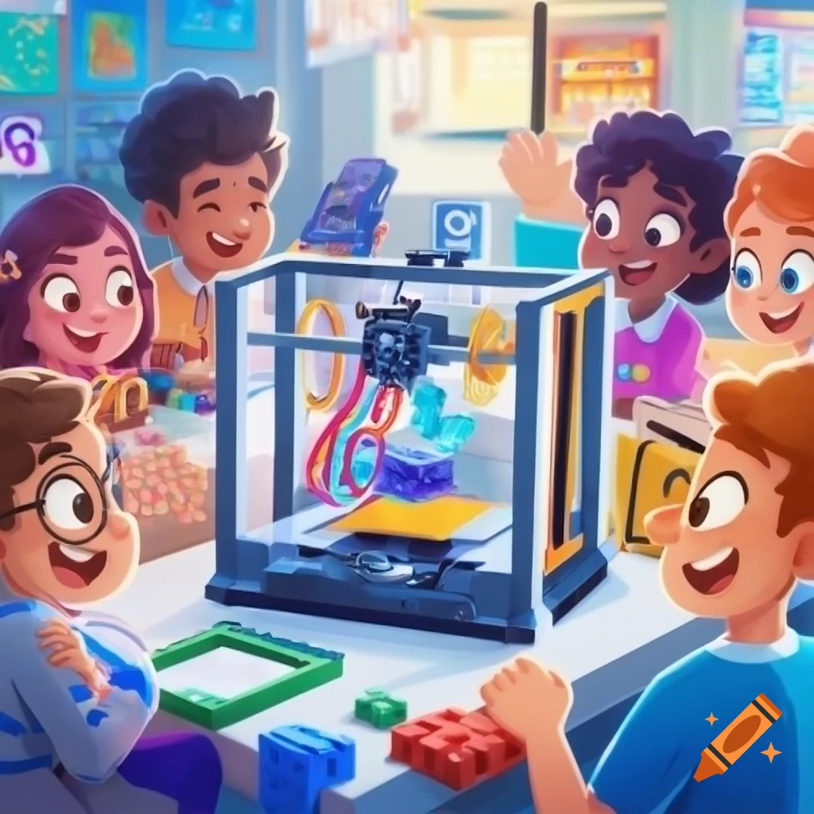
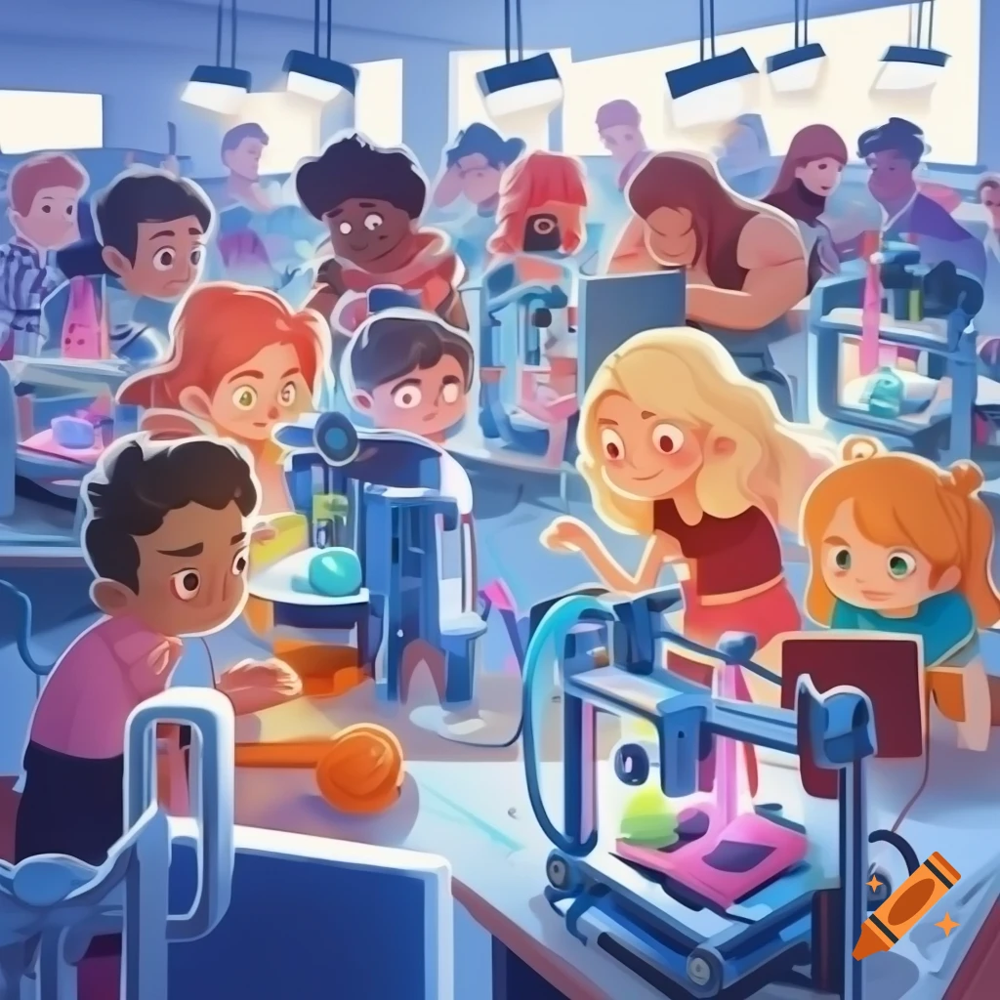
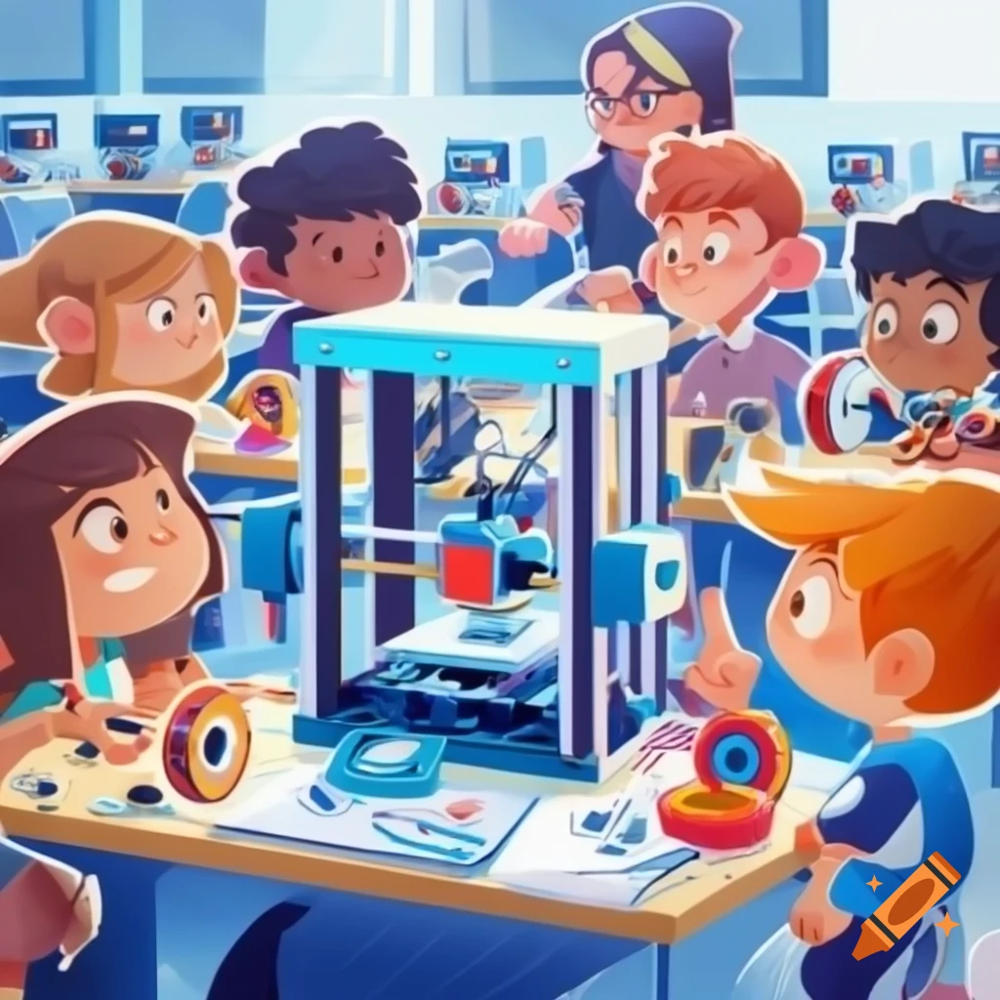

📘 第1頁：初見 3D 印表機

小新第一次走進創客教室，看見桌上一台亮晶晶的 3D 印表機...
📘 第2頁：安全檢查
開始操作前，小新戴上護目鏡，檢查列印平台是否乾淨...
📘 第3頁：開始列印
確認設定完成後，小新按下開始鍵...
📘 第4頁：小問題與解決
突然，第一層有點翹邊，小新心裡有些緊張...
📘 第5頁：成功完成

經過一小時的努力，作品終於完成！小新拿起印出的模型...
小新第一次走進創客教室，看見桌上一台亮晶晶的 3D 印表機...
開始操作前，小新戴上護目鏡，檢查列印平台是否乾淨...
確認設定完成後，小新按下開始鍵...
突然，第一層有點翹邊，小新心裡有些緊張...
經過一小時的努力，作品終於完成！小新拿起印出的模型...